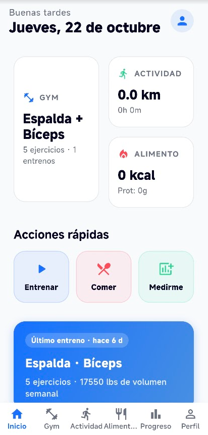
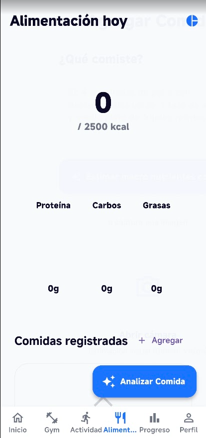
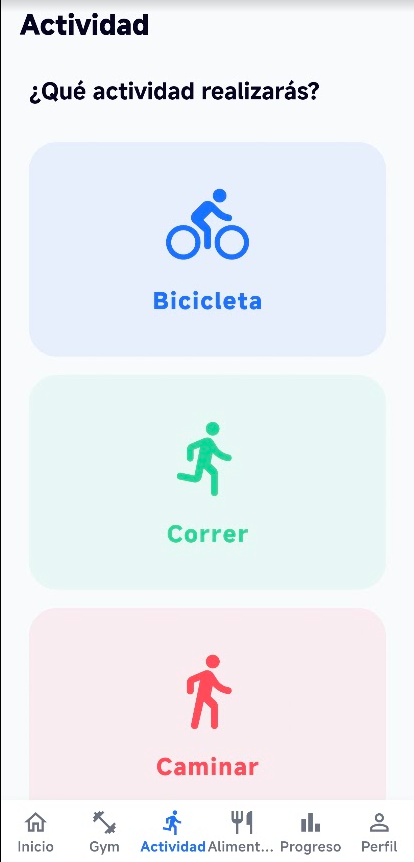
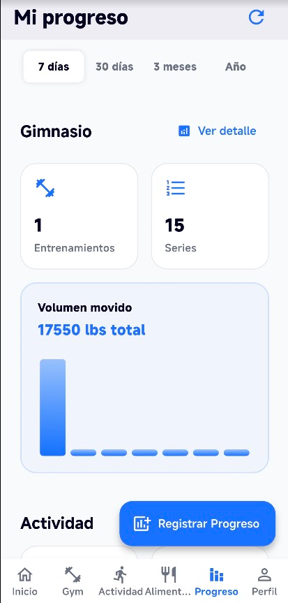
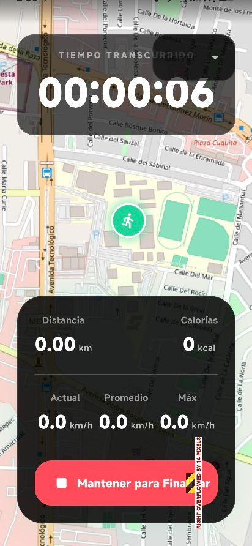

FitTrack AI
FitTrack AI es una aplicación móvil de fitness desarrollada en Flutter que reúne el entrenamiento, la alimentación y la actividad diaria en un solo lugar. Permite crear rutinas por grupo muscular, elegir ejercicios y registrar cada sesión con series, repeticiones y volumen acumulado.
El módulo de alimentación calcula las calorías y macronutrientes del día a partir de los alimentos registrados. La app incorpora análisis de comida asistido por IA para estimar la carga calórica de cada platillo y compararla con el objetivo diario.
El rastreador de actividad utiliza el GPS del dispositivo para medir distancia, tiempo, ritmo y calorías sobre un mapa en tiempo real. Toda la información se sincroniza con Supabase, lo que permite consultar el progreso por periodos de 7 días, 30 días, 3 meses o un año y mantener el perfil actualizado.
Características principales
- Autenticación con Supabase
- Rutinas por grupo muscular
- Biblioteca de ejercicios con búsqueda
- Registro de series y volumen
- Cálculo de calorías y macros
- Análisis de alimentos con IA
- Rastreo GPS en tiempo real
- Distancia, tiempo y ritmo
- Progreso por periodos
- Perfil y datos en la nube
Capturas de pantalla





